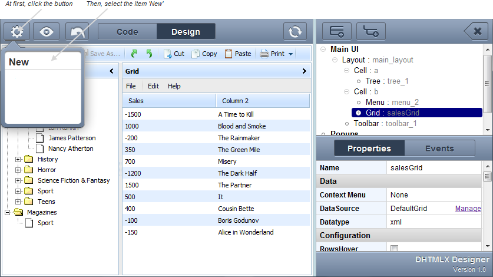

Table of Contents
Auxiliary actions
The auxiliary actions of the designer are:
Auto-refresh
To set auto-refresh:
- From the toolbar press
 . Forth, your design will be updated automatically after each change.
. Forth, your design will be updated automatically after each change.

Changing between workspace views
To change between views:
- From the toolbar select a tab with the desired view.

Saving a design to local storage
To save the current design for further quick access to it from the designer, make the following:
- Right click the element Snippets. A context menu will appear.
- From the context menu select collection.

Single refresh
To make a single design refresh:
- From the toolbar press
 . The design will be updated once.
. The design will be updated once.
Resseting to the initial state
To reset the designer, make the following steps:
- From the toolbar press
 . A drop-down menu will appear.
. A drop-down menu will appear. - In the drop-down menu select New. The design will be resetted to the default view.

Undoing the last action
To undo the last action, just press  from the toolbar. The action will be undone.
from the toolbar. The action will be undone.